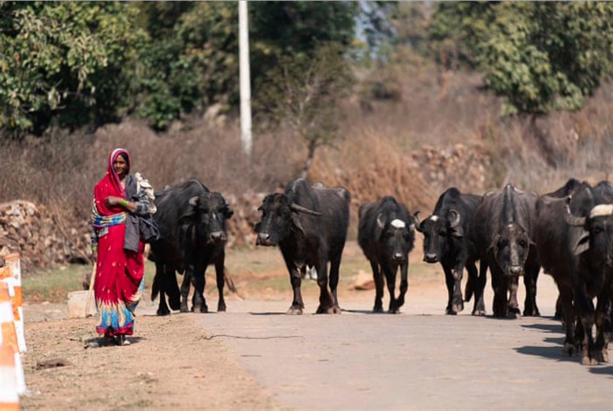
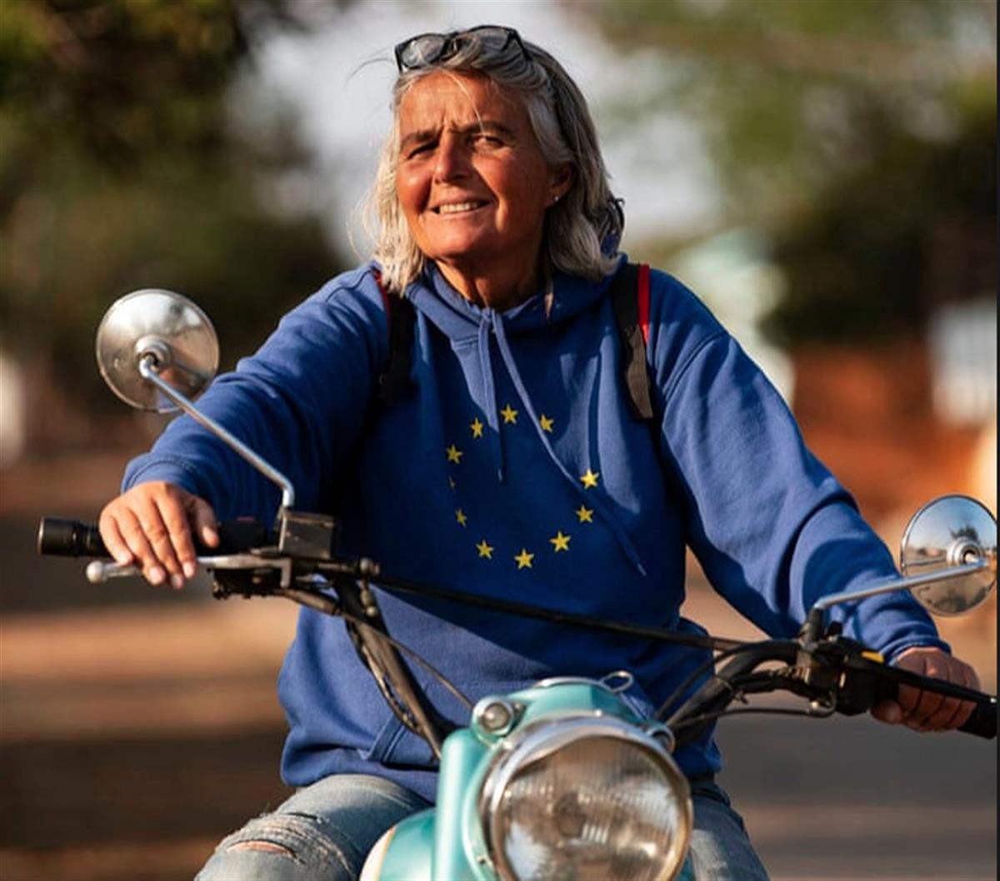
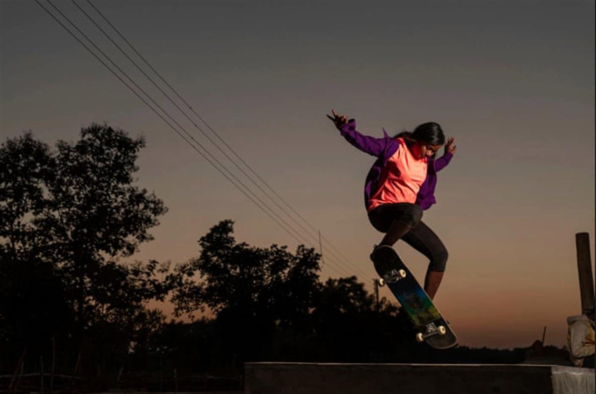
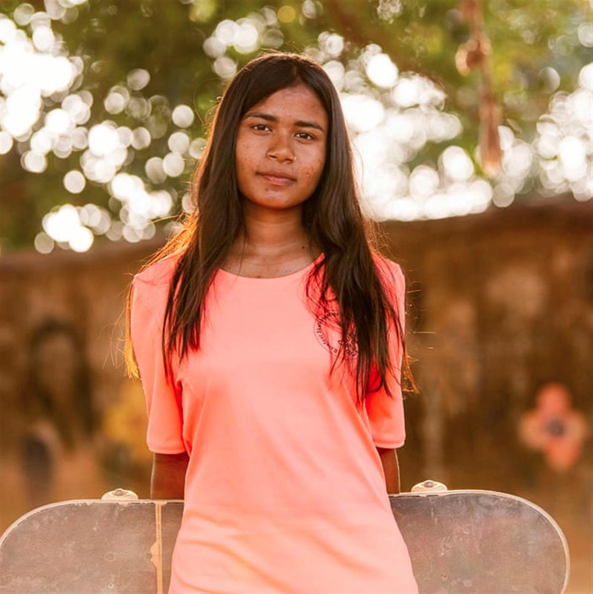
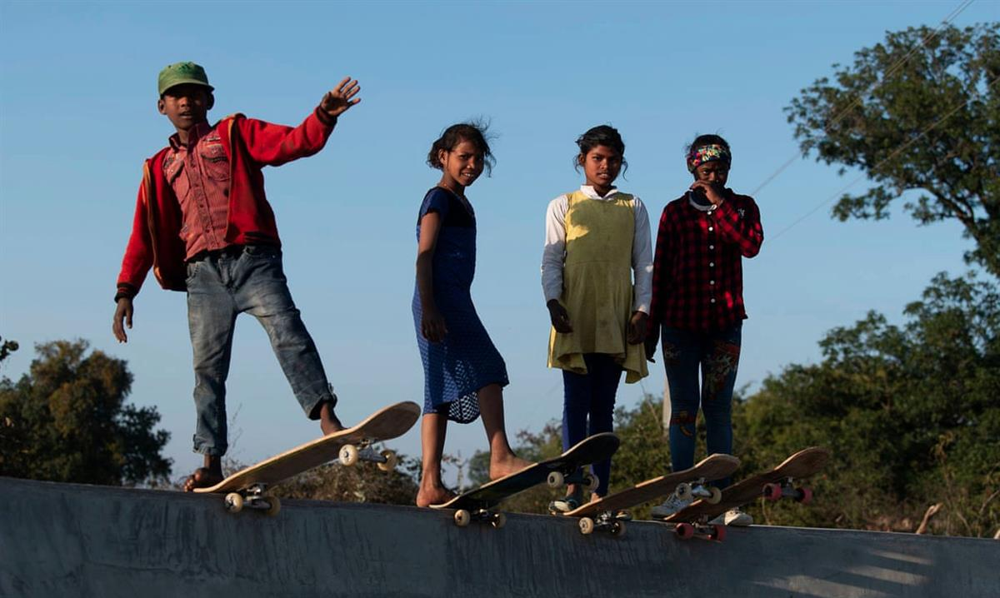

Children at Janwaar Castle in Madhya Pradesh have embraced skateboarding with relish, demonstrating the sport’s potential as a learning tool. Photograph: Matjaz Tancic
Global development: Global development is supported by
Jamie Fullerton in Madhya Pradesh
Fri 13 Mar 2020 06.00 GMTLast modified on Fri 13 Mar 2020 06.21 GMT
Bringing skateboards to children in Madhya Pradesh gives them enthusiasm to go to school and gives girls a confidence in themselves
The children skid into the dusty courtyard at breakfast time, grabbing skateboards from a stack near a tethered brown cow.
Boards jammed under arms, they sprint barefoot past a large well pump, the main water supply for many families here. They slap their wheels on to the still-clean concrete of Janwaar Castle – India’s newest skateboard park.
Opened in January to replace a skateboard park built a few hundred metres away in 2015, the large structure is flanked by grain crops that lie on the edge of Janwaar, a village of roughly 150 households in rural Madhya Pradesh, one of India’s poorest states.

The small village of Janwaar in Madhya Pradesh, one of India’s poorest states. Photograph: Matjaz TancicSoon, about 50 children are skating on the concrete. Toddlers scoot on boards, laying on their stomachs, while older children egg each other on to perform elaborate tricks.
However, when a bell rings from the schoolhouse next to the park, boards are dropped and the children file inside, illustrating the real purpose of the park.

Ulrike Reinhard, founder of The Rural Changemakers, the German organisation that funds Janwaar Castle. Photograph: Matjaz TancicUlrike Reinhard, the founder of Janwaar Castle and Rural Changemakers, the German NGO that funds it, set two rules for the young skaters: “No school, no skating” and “girls first”. The result has been increased school attendance and a chance to challenge prejudices.
School attendance in rural areas like Madhya Pradesh is often low. India’s 2018 annual status of education report found that 57.1% of enrolled primary schoolchildren aged six to 10 were in school during inspections in the state. For children aged 11 to 12, the figure was 53.4%.
Many parents in the village, where family earnings can dip below 2,500 rupees (£27) a month, received little or no education themselves, so don’t put pressure on their children to attend school.
Arun Kumar, 18, says that by the time his mother was 11 she was a married housewife. When he should have been in school, he says: “I just played and ran around the village.”
Asha Gond, 20, a director of Barefoot Skateboarders, an offshoot of Rural Changemakers that runs Janwaar Castle, says: “Before the skateboard park, kids just weren’t going to school.” About 80 children are now enrolled in the village’s primary school; since the park was opened, average pupil attendance rose from about 25 to 50.
As well as overseeing the park, Gond runs supplementary lessons for the children, outside the schoolhouse, using rocks as counting aids.

Asha Gond, director of Barefoot Skateboarders, demonstrates her skills. Photograph: Matjaz TancicShe regularly travels to New Delhi for training on a scholarship from NGO, and hopes to teach full-time in the village soon. There are still complaints about current teaching standards, which is why there is a need for her extra classes.
Popular, brilliant at skating, and with an ability to handle children with quiet authority, Gond has become a role model for the Janwaar children. In a male-dominated community, that is significant.
Along with the “girls first” rule, Gond’s role as a director helped reorder gender hierarchy among the children. Reinhard says that, without the rule, boys would have dominated the park. Instead, when a girl asks for a skateboard it is shared without protest. The result is visible: often there are as many girls skating as boys.
Gond says that, without discovering her skating talent, she would probably have become a housewife in an arranged marriage. When she first started skating in 2016, pressure to marry dovetailed with village gossip.

‘Before the skateboard park, kids just weren’t going to school’: Asha Gond. Photograph: Matjaz Tancic“Village people were saying things to my parents,” Gond says. “Like: ‘I’m skateboarding with boys, I’m talking to boys.’ So my father said: ‘Stop skateboarding.’ I was thinking: ‘Why can’t I do what I want?’ Boys do anything they want. Every day I was crying, but after crying I would feel stronger and new thoughts would come.”
When Gond started winning medals in skateboarding competitions, her parents eased off. Seeing tangible results from her obsession – she also skateboarded in a TV advert for tyres – they began to accept that she didn’t want an arranged marriage.
“Recently my grandfather came to my house and said: ‘What about your daughter? We can find a boy for her’. My father said: ‘Let her [be] successful in her life, then we’ll see,’” says Gond.
The building of Janwaar Castle was not without controversy. According to Reinhard, its construction ruffled feathers among some members of the Yadav caste, a group traditionally considered to be of higher social status than the village’s other group, Adivasi. A row over land use led to the second park being built, and the first largely abandoned.
Beyond gender and caste, the park’s existence arguably created a further divide: between skaters and non-skaters. As school ends and children get back on boards, a young girl walks by the park with a bundle of wood balanced on her head. Some parents insist their children dedicate time to house work, rather than school or skateboarding.

In a state where school attendance is low, children have responded with enthusiasm to the park. Photograph: Matjaz TancicDespite this, the park appears to have been overwhelmingly positive for many children. And its impact has been noticed outside Madhya Pradesh. Reinhard says that other village communities, including some near Bangalore and in the eastern state Odisha, recently worked on their own skateboard parks after seeking advice from Janwaar.
The sun sets, the children reluctantly trudge home from Janwaar Castle, and Gond’s mood becomes reflective. “Life is life – there is no meaning, you have to make your own purpose,” she says, kicking the end of her board so it leaps upwards. “Do what you want … don’t listen to what people say about you.”
SOURCE: THE GUARDIAN